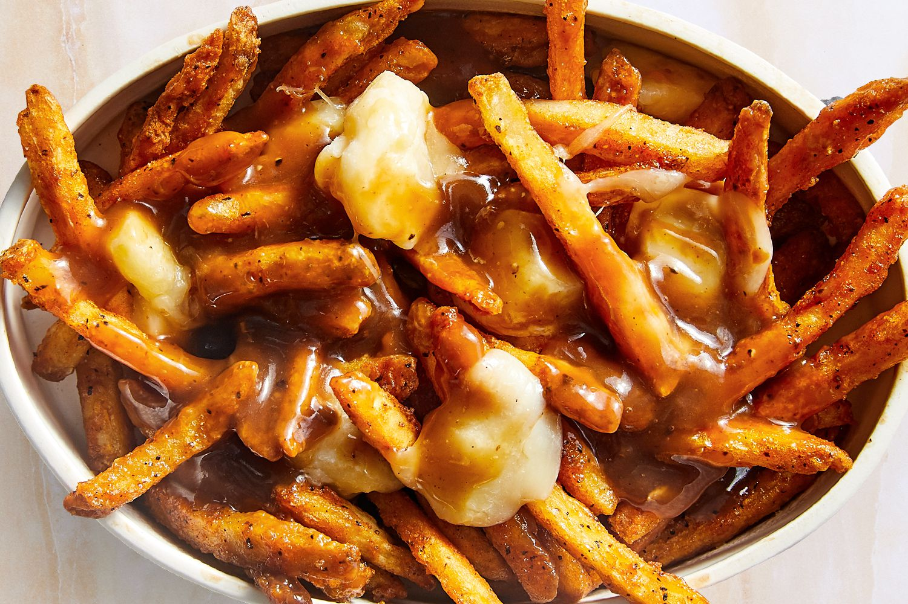
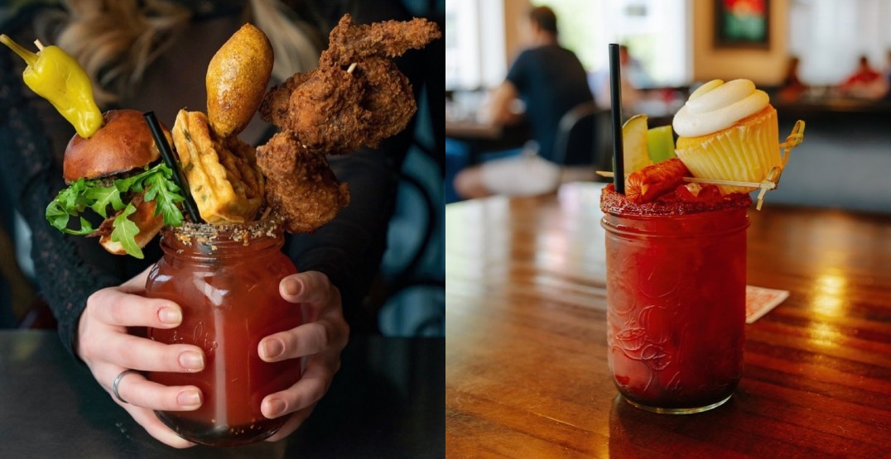
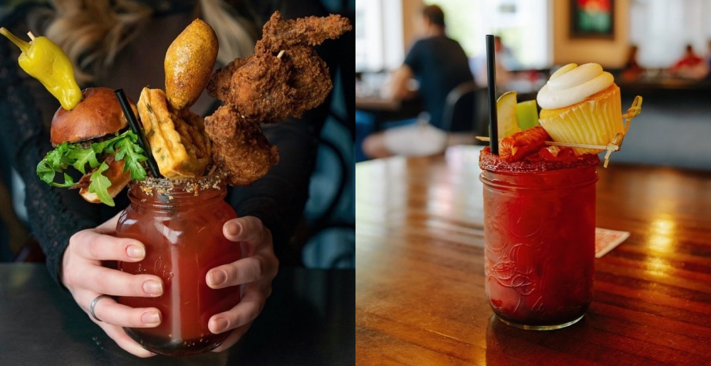

Poutine
Um prato delicioso originário do Quebec, feito com batatas fritas, queijo coalho e coberto com molho gravy.
Maple Syrup
Maple é um xarope extraído da seiva bruta de árvores do gênero Acer, um ícone do Canadá, usado em diversas receitas, principalmente em panquecas e waffles.
Caesar
Uma bebida alcoólica feita com vodka, molho inglês, molho de pimenta, suco de tomate e temperos.

 
